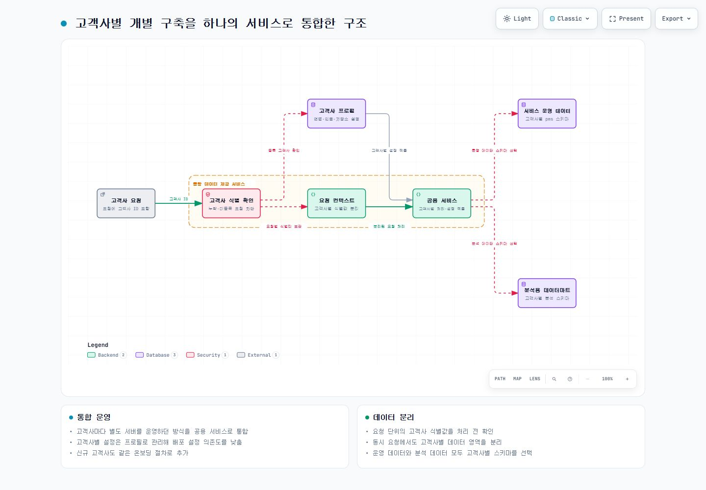

PROJECT 02 / 데이터 플랫폼
여러 고객사의 데이터 제공 서비스를 하나로 통합
고객사마다 따로 운영하던 데이터 제공 서비스를 하나의 공용 백엔드로 모았습니다. 요청의 고객사 번호를 처음부터 데이터베이스 선택까지 유지해, 공용 서비스 안에서도 다른 고객사의 데이터가 섞이지 않게 했습니다.
- 기간
- 2024.09 ~ 2025.09
- 담당 역할
- 백엔드 개발 · 기여도 100%
- Java
- Spring Boot
- PostgreSQL
- Citus
- Hibernate
하나의 테이블로 합칠 수 없었던 이유
고객사마다 데이터마트의 테이블, 컬럼, 집계 방식이 달랐습니다. 하나의 공통 테이블로 합치면 고객사별 데이터 구조와 조회 결과가 바뀔 수 있었습니다.
고객사마다 애플리케이션과 데이터베이스를 따로 배포·운영하고 있어 환경과 설정도 반복 관리했습니다. 공용 서비스로 바꾸더라도, 동시에 들어온 요청이 다른 고객사의 데이터나 설정을 참조해서는 안 됐습니다.
공용 서비스 안에서 고객사 데이터를 나누는 방식
하나의 공용 서비스를 운영하되, 데이터베이스 안에서는 고객사별 스키마로 영역을 나눴습니다. 스키마는 하나의 데이터베이스 안에서 테이블을 구분하는 논리적 공간입니다.
- 운영 데이터와 분석 데이터마트에서 각각 고객사별 스키마를 선택했습니다.
- 고객사별 설정은 운영 프로필로 관리해 개별 배포 설정에 의존하지 않도록 구성했습니다.
- HTTP 요청에 담긴 고객사 번호를 필터에서 검증하고, 비어 있거나 등록되지 않은 요청은 데이터 접근 전에 막았습니다.
- 검증된 식별값은 해당 요청이 끝날 때까지만 보관하고 바로 정리해 동시에 처리하는 요청끼리 값이 섞이지 않게 했습니다.
기존 고객사 데이터 이관
- 고객사별 스키마를 만들고 테이블 구조 정의(DDL)와 필요한 집계용 뷰를 반영했습니다.
- 기존 데이터마트와 서비스 운영에 필요한 메타데이터를 고객사별 스키마로 옮겼습니다.
- 이관 전후 데이터 건수와 핵심 집계 값을 대조해 기존 조회 결과가 유지되는지 확인했습니다.
- 새 고객사는 스키마 생성, 데이터 이관, 고객사 번호 등록 순서로 추가할 수 있게 절차를 정리했습니다.
구현 세부
요청 단위 식별값은 처리 종료 시 지우는 ThreadLocal에 보관했습니다. Hibernate는 고객사별 운영 스키마를 선택하고, 분석 쿼리는 대상 고객사의 스키마를 명시합니다. 고객사 프로필은 애플리케이션 시작 시 불러와 실행 중 설정으로 사용합니다.
결과
고객사별 개별 배포를 공용 서비스 운영으로 바꾸고 반복되던 배포와 설정 관리를 줄였습니다. 고객사마다 다른 데이터마트 구조는 유지하면서 운영 환경을 공통화했으며, 새 고객사를 같은 이관 절차로 추가할 수 있게 정리했습니다.
요청에서 고객사별 데이터 선택까지
요청의 고객사 식별값을 확인한 뒤 운영 설정과 데이터 영역을 선택합니다. 요청이 끝나면 식별 정보를 정리합니다.
